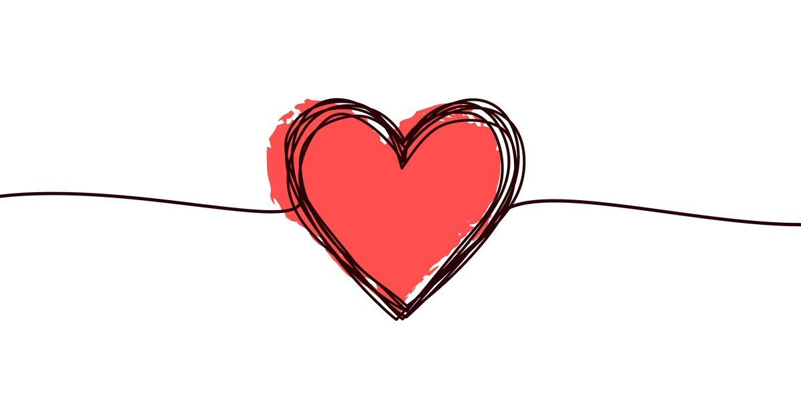

L'amore è la cosa più bella di tutto il mondo ; l'amore è speranza, alimenta i sogni più grandi e, se sei innamorato, devi goderti quello che hai, perché, a volte, l'amore non dura per sempre.
Ogni storia d’amore è diversa da tutte le altre; pretendere il contrario è una delle 9 cose da non fare mai! Tuttavia ci sono alcuni ‘elementi’ che si devono essere sempre presenti. Oggi ve li presentiamo sottoforma di vocabolario della relazione stabile e forte: le 20 parole chiave dell’amore, seguitele alla lettera e sarete una coppia perfetta!zankyou
La cosa più importante in ogni relazione è sentirsi sicuri nella coppia: la fiducia si costruisce poco a poco, con tempo e pazienza, e vi permetterà di essere voi stessi, senza paura di apparire o di mostrare i vostri lati più fragili. È fondamentale poter parlare di qualsiasi cosa, potrete confidarvi quando avete dei problemi ed essere sinceri tra voi, cosa che renderà la relazione migliore ogni giorno!
Farla ridere è l’arma di seduzione più forte. Vale anche al contrario: far ridere il proprio uomo è un modo di condividere momenti di intimità che consolidano la vostra relazione. Ridere significa capirsi e creare quella sintonia che noterete solo nelle coppie che stanno insieme da tanto tempo.
Un detto dice ‘ogni donna ha un fidanzato ed un migliore amico, ma se è fortunata sono la stessa persona’. Forse per questo tante donne sognano di sposare il loro migliore amico? È assolutamente vero che le relazioni funzionano meglio quando prima che coppia si è stati amici, provare per credere!
Sono uno strumento che dinamizza la relazione, evitando di ricadere nella routine, nella quale si sa, anche i piccoli gesti d’amore a volte non si notano. Sorprendere la persona che amiamo ci darà grande soddisfazione personale, con l’effetto non secondario di rinnovare l’amore nel partner. È sempre bello sapere che qualcuno dedica del tempo per noi.
Una parola chiave che è necessaria per costruire la prima di questo elenco (fiducia); non importa se è difficile dire la verità, è sempre la cosa migliore da fare. Non c’è niente di più brutto che venire a conoscenza di alcune cose da terze persone.
Un’altro elemento fondamentale per far funzionare la relazione è comprendere che l’altro è diverso da noi, ma che lo amiamo così. A volte ha abitudini che non solo non capiamo, ma arrivano ad infastidirci; non dobbiamo scontrarci ma cercare di vedere le cose dalla sua prospettiva, è l’unico modo per capirsi davvero.
7. Diversione È importante fare attività diverse dalle solite con il proprio partner. Serve a stimolare la spontaneità e la creatività, che non solo sono divertenti ma vi permetteranno di affrontare la vita con più leggerezza.
Questa parola è spesso sinonimo di comprensione: servono tolleranza e pazienza per vivere insieme. La convivenza non è tutta rose e fiori e bisogna saper affrontare senza drammi gli inconvenienti che si incontrano lungo il cammino.
Così vi dovete sentire quando state insieme, quando vi prendete per mano e vi abbracciate. La sicurezza vi farà sentire che insieme potete affrontare ogni difficoltà. La verità è che ci saranno molti ostacoli nella vostra lunga vita, solo insieme potete superarli.
La prima differenza che noterete tra l’uomo della vostra vita e uno di passaggio è proprio questa: l’uomo perfetto non manca mai di rispetto alla sua donna, e viceversa. Questa è una regola base che vale con tutti, figuriamoci quanto è importante con la persona che si ama.
Anzi, ancora di più: milioni di baci, come piovesse! Non lesinate mai nelle manifestazioni d’affetto, sono il modo più spontaneo e naturale di manifestare l’amore.
Ricevere attenzione da parte della persona che si ama è un desiderio condiviso da tutti. Non significa certo essere ossessivi o tendere a controllare l’altro; semplicemente sapere che l’altro c’è e poter contare su di lui è essenziale! Parlare con il muro non è mai piaciuto a nessuno.